功能 1
市场洞察、产品规划与产品路标
这个功能是什么
把“市场上要不要做、做成什么版本、什么时候做、投入多少资源”从个人经验变成可管理的对象：市场机会、产品版本、路标和项目可以互相引用，而不是散落在 PPT 里。
解决什么问题
常见情况是：市场反馈、客户要求和竞品信息在邮件和会议纪要里；产品版本规划靠少数人口头拍板；研发项目已经开工，却说不清对应哪一代产品和哪份商业计划。结果是研发在做，市场上要的已经变了，或者多个项目抢同一批资源。
如何解决
- 1
市场或产品经理把机会、客户需求和竞品信息收成市场需求，而不是只写在文档里。
- 2
产品规划把这些需求收敛成产品版本和路标：这一代做什么、下一代做什么、哪些进项目、哪些先放技术货架。
- 3
立项时从路标生成或关联研发项目，项目带着投资属性、风险等级和技术目标，而不是只填一个项目名称。
- 4
跨职能时间轴把项目、财务、市场、研发、制造放在同一条里程碑线上，用 TR / DCP 作为共同关口。
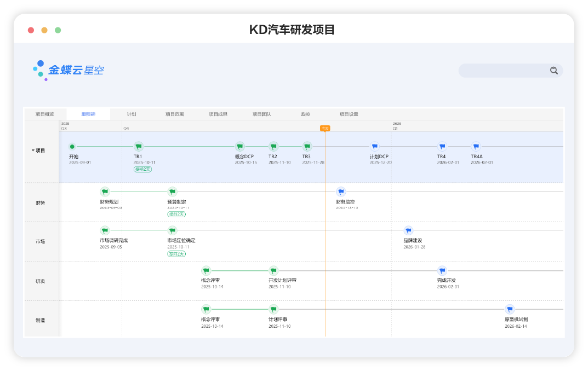
图 2 · IPD 跨职能里程碑（官网示意）。 同一项目按季度展开，项目、财务、市场、研发、制造各占一行。绿色节点是已完成关口，蓝色是计划关口。金蝶用这张图表达：规划不是研发自己的甘特图，而是跨职能在同一时间轴上对齐 TR / DCP。
实现机制
市场机会、产品版本、路标、项目是不同对象，用编码、状态和关联关系串起来。路标版本变化时，不是改一张图，而是生成新的路标对象并保留历史。项目从模板实例化后，继续用计划、团队和评审把规划落到执行。
产品路标的完整交互页面在公开手册里几乎看不到。上面这张图是官网方案示意，能说明金蝶想怎么管规划，还不能当实机操作证明。
功能 2
需求管理与系统工程
这个功能是什么
把需求从文档段落拆成可分类、可版本、可追溯的记录，再连到架构、BOM 和测试，形成“需求有没有被设计覆盖、有没有被验证”的闭环。
解决什么问题
硬件研发里最常见的断点是：客户说要的功能写在 PRD 里，架构在另一份文件，BOM 在 PLM 或 Excel，测试用例在质量系统。改了一条需求，没人能立刻回答：架构改没改、哪些零件受影响、哪条测试要重做。最后往往到整机联调才发现漏项。
如何解决
- 1
把市场需求、产品需求、系统特性建成独立记录。每条有编码、标题、类型、使用状态、数据状态、版本和责任人。
- 2
按类型分类：功能、非功能、数据、安全、性能、接口等。分类不是标签装饰，而是后面拆架构和测什么的依据。
- 3
把产品需求继续拆到系统特性和更细的需求。父子关系用来看覆盖，而不是把所有话写进同一段文字。
- 4
系统工程师定义功能架构、物理架构和接口，必要时对照标准架构模板生成系统架构 BOM。
- 5
用 RAS 关系把需求、架构、BOM、测试连起来。缺关系就等于这条需求还没被设计或还没被验证。
- 6
测试结果回写到原始需求。通过测试，不是“项目结束了”，而是这条需求被证据关闭。
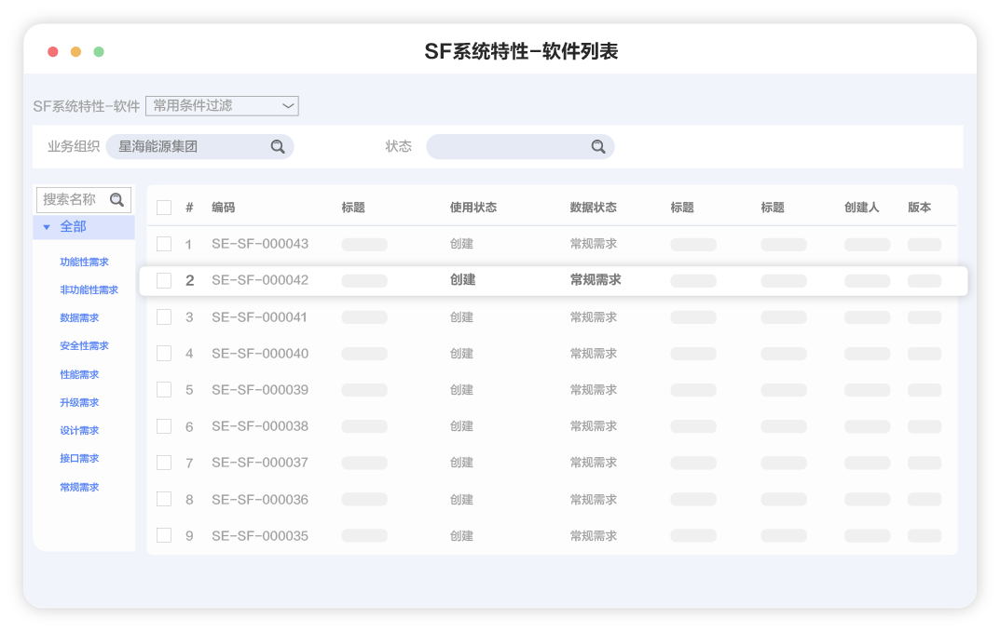
图 3 · 系统特性列表（官网示意）。 左侧按需求类型分树，右侧每条需求是独立对象：有编码、标题、使用状态、数据状态和版本。“使用状态”和“数据状态”分开，说明金蝶把“这条需求是否还有效”和“它属于哪类数据”当成两件事管。
实现机制
需求是业务对象，不是附件。业务类型区分类别；父子关系做分解；关系对象连接架构 / BOM / 测试；生命周期控制评审和基线；工作流负责评审通过。RAS 矩阵本质上是这些关系的透视，不是另一套独立系统。
官网明确写了“需求—架构—BOM—测试 RAS 关联”。公开页面能看到需求列表，还看不到完整矩阵交互。AI 辅助提取需求目前也只是产品主张。
功能 3
技术货架与 CBB
这个功能是什么
把可复用的技术能力、通用模块（CBB）和成熟度做成企业级对象，让新产品优先“从货架取”，而不是每个项目从零发明。
解决什么问题
同类电源模块、通信板、结构件在不同项目里被重复设计；预研成果做完就停在个人电脑；后面项目不知道某项技术已经验证到什么程度。这会造成重复投入，也会让不成熟的技术被提前用进整机。
如何解决
- 1
技术规划输出技术组件和 CBB，登记编码、适用场景、接口、负责团队、成熟度和验证证据。
- 2
技术预研项目和技术货架分开：预研负责把不确定性做掉，货架负责把已验证能力提供给产品项目。
- 3
产品项目在架构和 BOM 阶段优先引用货架上的 CBB，而不是新建物料和图纸。
- 4
成熟度变化要有版本。不成熟的技术可以看见，但不能被当成已发布模块直接量产引用。
实现机制
技术货架对象带字段、生命周期和关系：连到文档、BOM、测试和项目。复用时不是复制一份说明，而是引用同一个技术对象。成熟度是状态，不是口头评价。
这一块在官网能力图里很完整，公开操作手册几乎没有对应页面。下面的实现描述来自官方能力说明，不是实机逐步截图。
功能 4
研发项目管理
这个功能是什么
用项目模板把一次开发拆成阶段、任务、团队、输入输出和检查项。项目经理在甘特图上排计划，任务负责人提交交付物，系统用结束条件和检查项判断阶段能不能过。
解决什么问题
没有项目管理时，研发进度在周报里，交付物在共享盘，谁能改计划、谁该交什么说不清。有了普通任务系统后，又容易变成“进度改成 100% 就算完成”，但图纸、BOM、评审记录并没有齐套。金蝶要解决的是：计划、人、交付物、权限和变更在同一个项目对象里。
如何解决
- 1
从项目模板新建实例。模板带好阶段、任务、角色、文件夹和检查项，避免每个项目从空白甘特图开始。
- 2
在项目基本信息里登记目标、投资属性、风险、计划时间和生命周期。项目不只是一串任务，还带着“这是什么级别的研发”。
- 3
用 WBS / 甘特图排阶段和任务，设置工期、前置任务和依赖。系统可按依赖自动排程。
- 4
配置项目团队和角色权限：谁能改计划、谁能交输出、谁只能看。资源负荷用来看人有没有被多个项目叠满。
- 5
给任务规定输入和输出。输出可以是文档、物料、BOM 等业务对象，还可以设成任务结束条件——没有合格交付物，任务不能结束。
- 6
阶段用检查项做进入 / 退出门槛。计划、团队、配置若要改，走项目变更并留下基线对比。
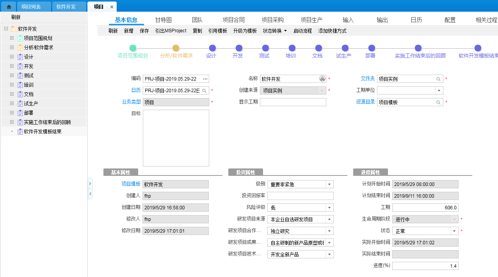
图 4 · 项目基本信息。 左侧是阶段树，上方是甘特图、团队、输入、输出、配置、变更等页签。基本信息里同时有目标、投资属性和进度属性。说明金蝶把“战略属性”和“执行进度”放在同一项目对象上。
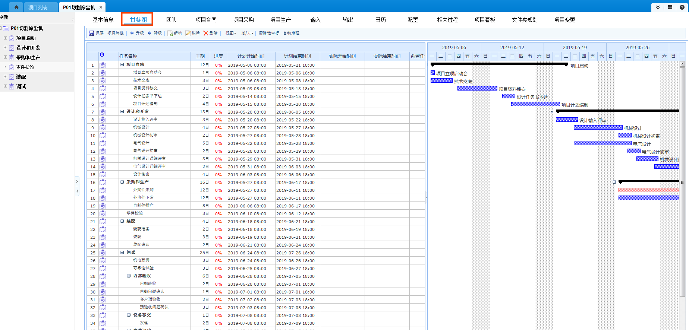
图 5 · 项目计划甘特图。 左表是任务名称、工期、进度、计划/实际时间、前置任务；右图是时间条和依赖线。这是金蝶执行层的主界面：工作被拆成可排程的 WBS，而不是按业务结果的解耦单元。
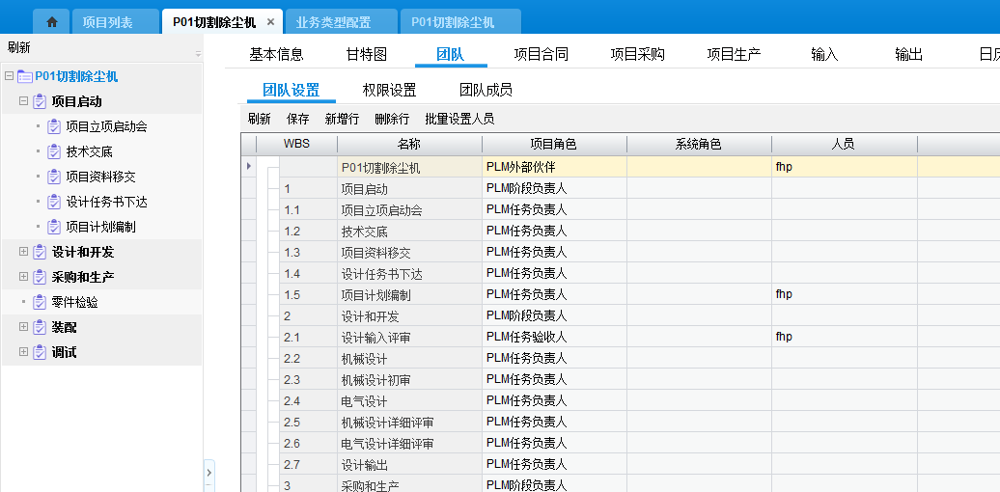
图 6 · 项目团队。 团队成员按角色进入项目。权限不是全员一样，而是跟项目阶段和任务角色绑定。
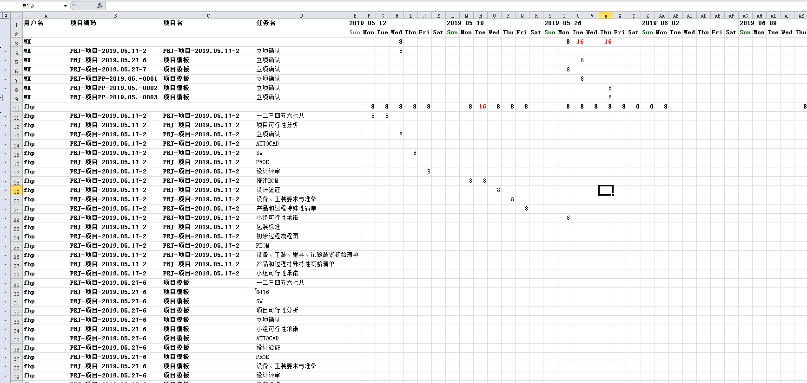
图 7 · 人力资源负荷。 按人和时间看占用。金蝶用它支撑项目经理调资源，默认假设资源是被中心调配的，而不是由主责人按需调用组织能力。
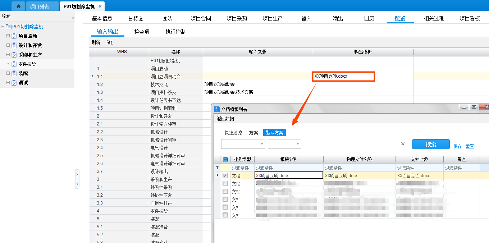
图 8 · 任务输入输出配置。 模板或任务可以规定输入对象、输出对象、业务类型和存放文件夹。这一步把“任务”和“产品数据对象”接上，是金蝶项目管理比普通看板强的地方。
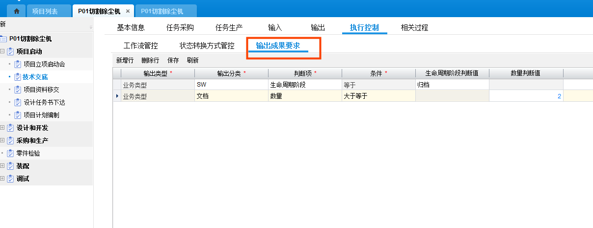
图 9 · 输出作为结束条件。 系统允许规定：某些输出没提交或没归档，任务就不能结束。完成不再只等于把进度条拖满。
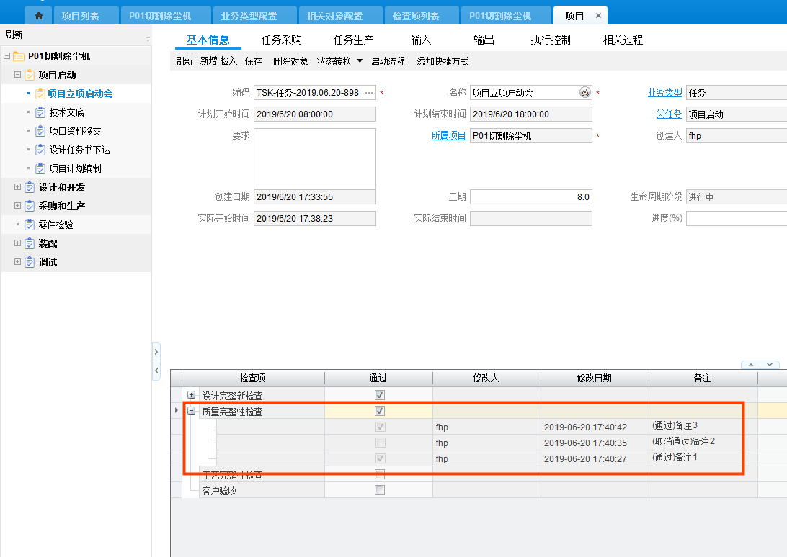
图 10 · 项目检查项。 阶段或任务结束前要勾选/确认一组规则，例如交付物是否齐套。它接近评审清单，但是嵌在项目对象里，而不是另一份 Word。
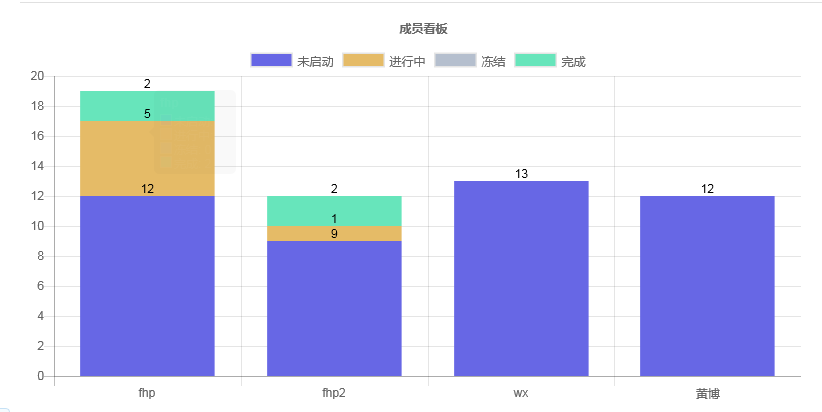
图 11 · 成员看板。 个人从看板看自己的任务分布。工作台把“我要做什么”从项目甘特图里抽出来，但任务来源仍然是项目计划。
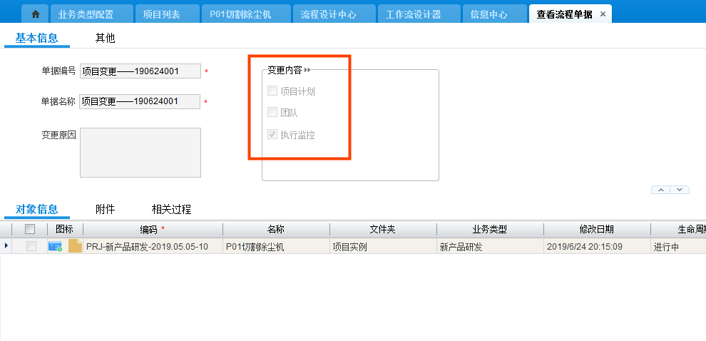
图 12 · 项目变更内容。 项目启动后，计划、团队、配置不能随便改，要走变更单。金蝶把“执行中的项目”当成受控对象。
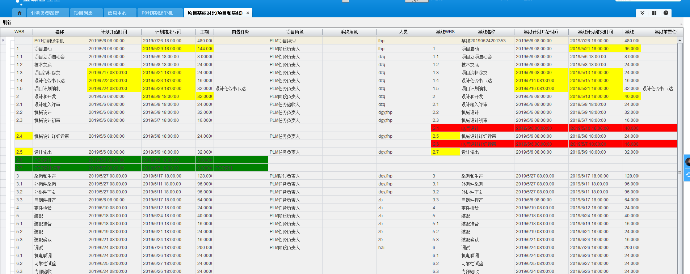
图 13 · 项目基线对比。 变更前后的计划可以对比。基线用来回答：我们当初承诺的是什么，现在偏了什么。
实现机制
项目和任务都是带生命周期的对象。模板复制出实例；甘特图维护时间和依赖；权限按角色和阶段生效；输入输出是对象关系；检查项是规则；变更单改受控内容并生成新基线。项目还能引用合同、采购、生产等协同单据，把研发项目接到经营侧。
功能 5
研发评审、测试、问题与风险
这个功能是什么
把 TR / DCP 评审、测试验证、缺陷和风险做成可关联对象，让“过关”有要素、有证据、有遗留问题，而不是会议纪要里写一句通过。
解决什么问题
阶段评审如果只靠会议，结论无法回溯到具体需求和测试。测试如果独立在质量系统，也回答不了“这条失败对应哪条原始需求”。问题发现后若不转成风险或变更，会在下一阶段重复爆发。
如何解决
- 1
按 IPD 定义评审类别和要素，例如 TR1、概念 DCP、计划 DCP。评审计划挂在项目里程碑上。
- 2
评审时对照检查项、交付物和测试证据，输出评审报告和结论。不通过就生成问题。
- 3
测试方案和用例关联需求与架构。执行结果、缺陷、仿真数据回到同一条追溯链。
- 4
问题可升级为风险，也可触发工程变更。关闭问题需要处理记录，不是从列表里删除。
图 2 的里程碑页已经把 TR / DCP 画在跨职能时间轴上。公开手册没有单独的评审表单大图，但产品主张很清楚：评审是项目对象上的关口，测试是需求闭环的右端。
实现机制
评审、测试、缺陷、问题、风险都是对象，通过项目、需求和 BOM 关系连接。V 模型在系统里的落点就是：左边需求分解，右边对应层级的验证，中间用关系矩阵看覆盖。
功能 6
文档管理
这个功能是什么
图纸、规格、工艺、检验规范不再只是文件夹里的文件，而是带业务类型、生命周期、版本和相关对象的受控记录。
解决什么问题
共享盘的典型问题是：同名图纸有多份、不知道哪份已发布、改图时两人同时覆盖、下游拿到的是旧 PDF。金蝶要让文档进入产品数据网：能检索、能锁定、能升版、能被物料和 BOM 引用。
如何解决
- 1
先给文档业务类型配生命周期、属性和可执行操作。例如 CAD 图纸和普通说明走不同规则。
- 2
文档库用文件夹视图按目录浏览，用业务类型视图按对象和状态检索。两种视图解决“找得到”和“管得住”。
- 3
新增、导入或从 CAD 注册文档。文件进文件服务器，元数据进对象。后台加密，避免直接拷走源文件。
- 4
修改前检出，改完检入。其他人看到锁定状态，避免同时覆盖。
- 5
状态在提交、归档、发布、报废之间转换。归档后可供后续引用；要改内容就升版，新版本回到可编辑状态，旧版本保留。
- 6
在相关对象里挂物料、BOM、项目。后面做变更影响分析时，系统能从文档反查到这些对象。
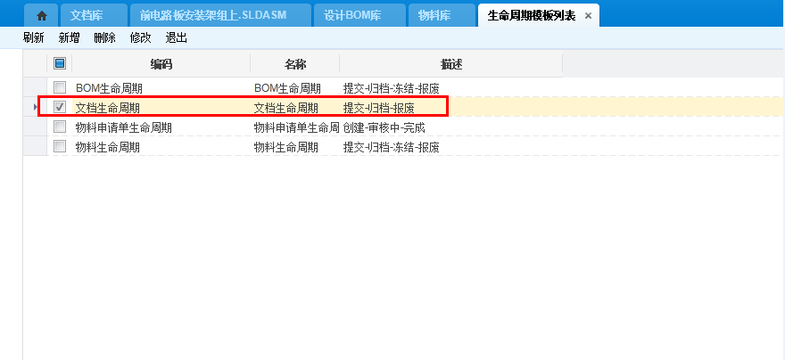
图 14 · 文档生命周期模板。 生命周期按业务类型配置。预置路径大致是：创建到提交，提交到归档，归档可发布、可报废、可升版。状态决定能不能改、能不能被下游使用。
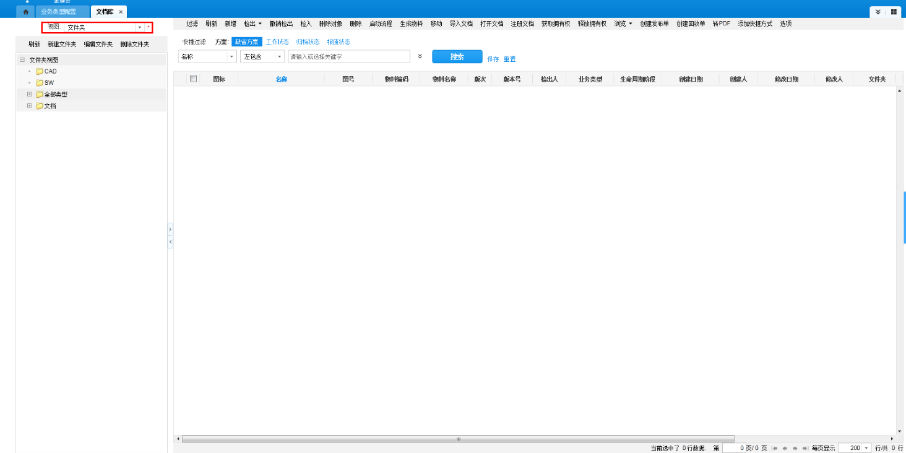
图 15 · 文件夹视图。 左侧是目录树，右侧是文档列表。适合按组织习惯找资料，但列表字段取各业务类型的交集，所以它不是唯一工作面。
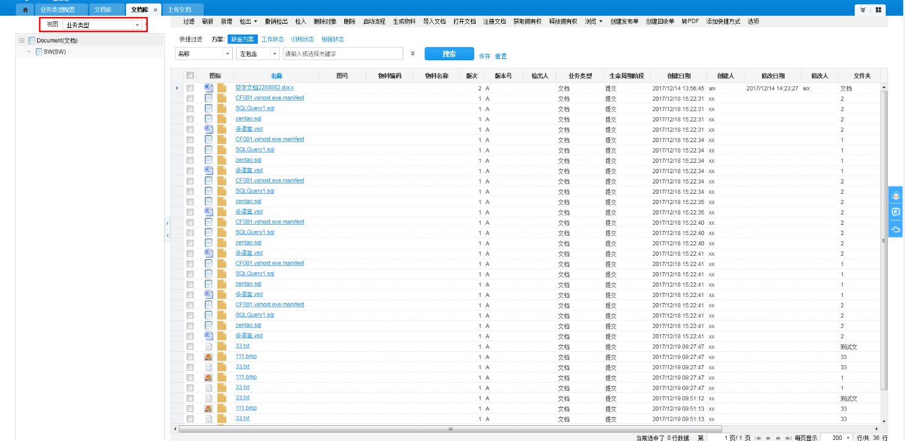
图 16 · 业务类型视图。 按对象类型检索。列表字段和按钮跟随该类型的配置，更接近“管对象”而不是“管文件夹”。
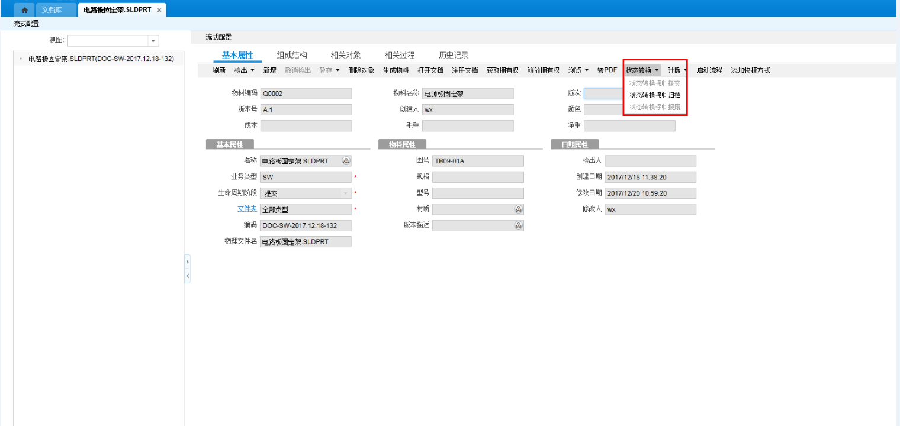
图 17 · 文档详情与状态转换。 打开一份 SolidWorks 零件图，可以看到编码、图号、版本、生命周期阶段。状态转换提供提交 / 归档 / 报废。同一屏还能生成物料、转 PDF、启动流程，说明文档是产品数据入口，不只是预览器。
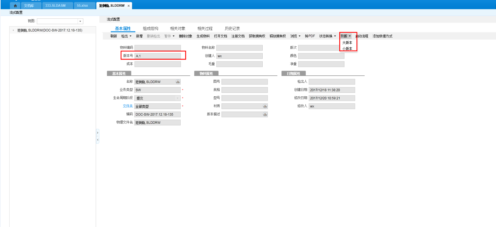
图 18 · 文档升版。 已归档对象要改内容时升版。新版本进入可编辑阶段，旧版本仍可追溯。这是“改图不丢历史”的基本机制。
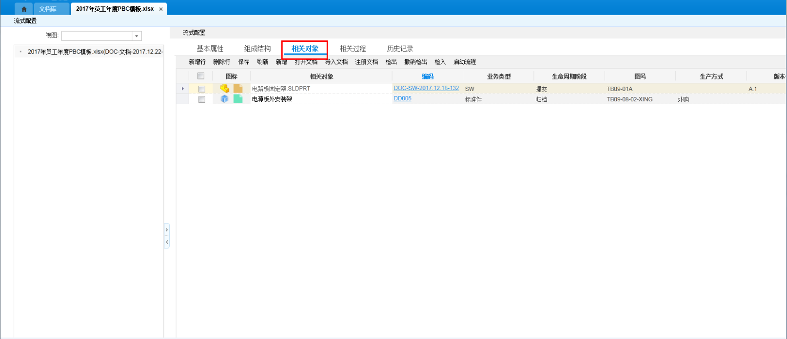
图 19 · 相关对象。 文档详情里可关联物料等对象。后面 CAD 生成物料、变更影响评估，都依赖这类关系，而不是靠文件名约定。
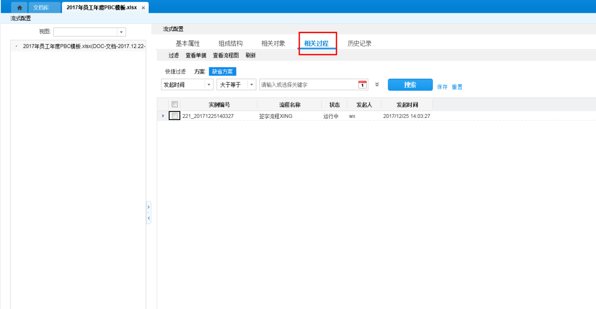
图 20 · 文档工作流。 发布、归档往往不是手点状态就结束，而是走审批和签字。流程节点可以在 PDF 上落签名，把“谁批准了这版图纸”留在文件里。
实现机制
文档对象 = 元数据 + 文件 + 生命周期 + 关系。文件夹只是存放路径。检入检出管并发；版本 / 版次管历史；工作流管批准；相关对象把文档织进 BOM 和项目。
功能 7
研发物料与 BOM
这个功能是什么
以物料和 BOM 为产品结构的唯一数据源：设计看 EBOM，工艺看 PBOM，制造和采购看下推后的制造 BOM，各视图同源，变更可比较、可下推。
解决什么问题
研发一份 Excel BOM，生产一份 ERP BOM，采购再抄一版，是制造企业最贵的数据错误来源之一。改一个电阻，上层结构、替代料、在制工单对不上。金蝶要让 BOM 从设计产生，经过规则转成制造数据，而不是人工重录。
如何解决
- 1
研发物料单独建档：分类、属性、认证、优选、替代。能复用的先从优选库取，减少一物多码。
- 2
EBOM 在设计 BOM 库或父物料页签上维护。结构可以多版本、多 BOM 并存。
- 3
用 BOM 编辑器改结构：引用、替换、删除、提层、调整顺序。改之前检出，避免并发。
- 4
用比较功能看两个版本或两个视图差在哪，再决定升版还是局部替换。
- 5
工艺在 EBOM 上补工序、工装和包装等，形成 PBOM / 工艺 BOM。
- 6
按映射规则下推到 ERP 制造 BOM。下推的是物料、结构和关系属性，不是把一张表复制过去。
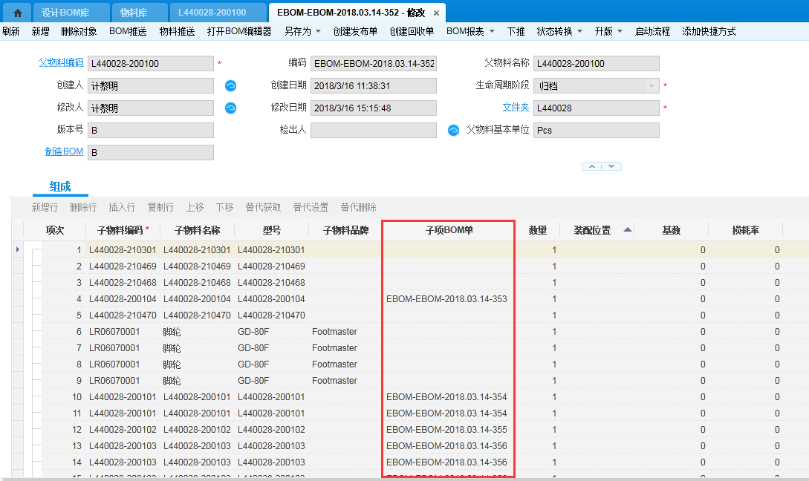
图 21 · 设计 BOM 列表。 BOM 和文档一样，按库管理，可按业务类型或文件夹进入。BOM 是独立对象，不是某张图纸的附件。
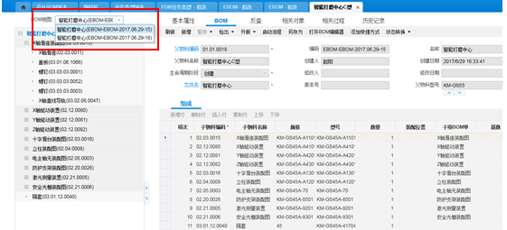
图 22 · 父物料上的 BOM 页签。 工程师也可以从物料进入结构。物料是节点，BOM 是节点之间的组成关系。
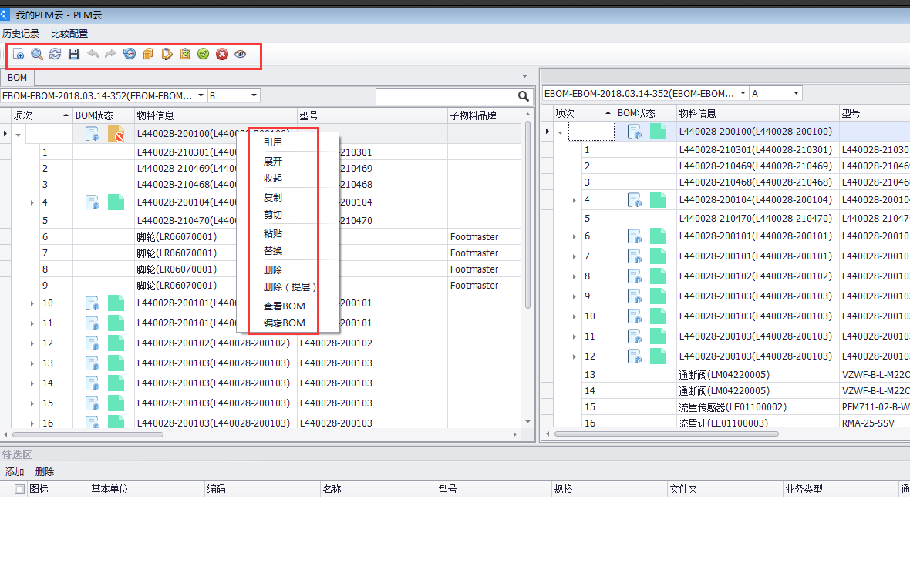
图 23 · BOM 编辑器。 左右可对照不同版本，右键提供引用、复制、替换、删除提层等结构操作。底部待选区用来暂放要加入的物料。这是设计结构真正被改写的工作面。
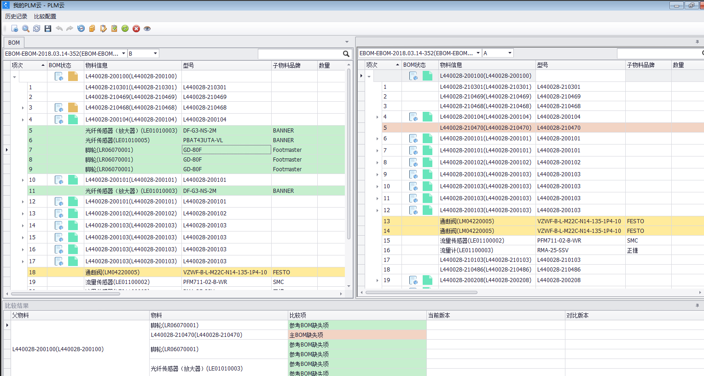
图 24 · BOM 比较。 两个版本并排，差异用颜色或标记显示。比较是升版和变更评审的证据，不是人工拿两张 Excel 对。
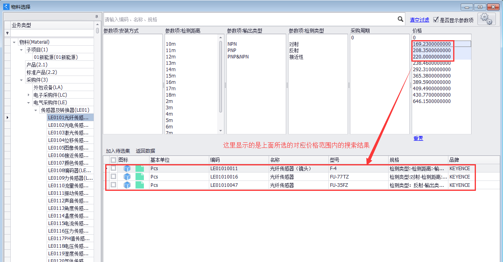
图 25 · 物料优选。 按分类、参数、价格等过滤候选物料。目的是设计时尽量用已认证、已优选的料，从源头减少新码和后期供应风险。
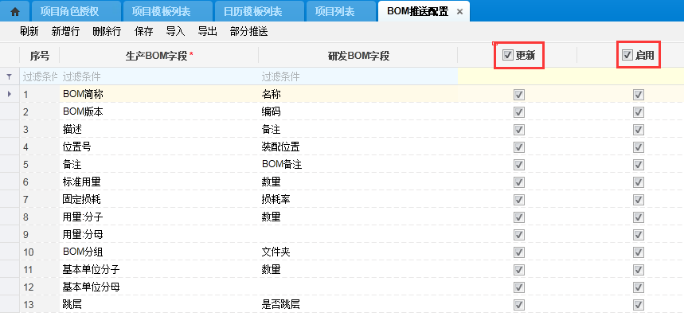
图 26 · BOM 下推配置。 哪些属性、哪些结构传到制造侧，由规则决定。这是研产一体化的关键闸门：设计数据不能原样灌进生产，但也不能靠人重新录入。
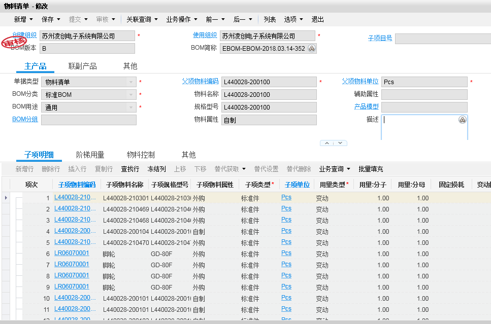
图 27 · 下推后的制造 BOM。 ERP / 制造侧看到的是转换后的结构。之后采购、工单、库存都以这份为准，直到下一次变更再生效。
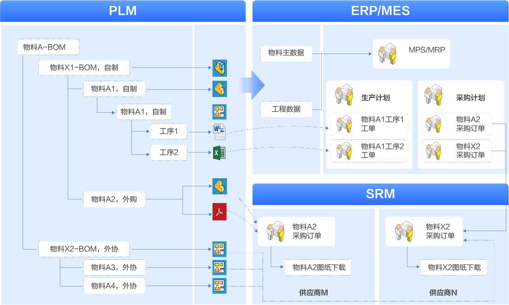
图 28 · 研产一体化（官网）。 左侧 PLM 管 BOM、图纸、工序；中间把物料主数据和工程数据交给 ERP/MES；右侧采购计划进 SRM，供应商按权限下载图纸。金蝶强调的不是“多一个 PLM”，而是设计结果能驱动计划和供应。
实现机制
物料和 BOM 都是对象。BOM 行保存数量、位号、替代、有效性等关系属性。生命周期控制能不能改；检入检出控制并发；版本保留历史；映射规则完成 EBOM → PBOM → 制造 BOM；ERP 同源或接口负责下游生效。
功能 8
CAD / EDA 集成与协同设计
这个功能是什么
工程师仍在 AutoCAD、SolidWorks、Altium 等工具里画图，但标题栏、明细栏和装配结构被抽成 PLM 的文档、物料和 BOM，不靠手工抄。
解决什么问题
如果图纸在 CAD 里，物料在 ERP 里，两边靠人抄编码和数量，一定会出现图料不一致。装配改了子件，BOM 没改；或者 BOM 改了，图纸还是旧的。金蝶用插件把设计工具变成 PLM 的录入端。
如何解决
- 1
在系统建模里配置文件类型：后缀、图纸属性与 PLM 字段的对应关系。一般字段进物料，BOM 字段进结构。
- 2
文档业务类型关联对应 CAD 文件类型，例如 AUTO 关联 AutoCAD。
- 3
工程师在 CAD 中登录 PLM 插件，填标题栏 / 明细栏，或从已有物料回写属性。
- 4
导入文档时，系统读取图纸结构和属性。装配展开为文档组；明细中没有实体文件的行会生成虚文档。
- 5
按物料索引匹配已有物料；没有则新建。再按装配关系生成 BOM，并与图纸建立强关联。
- 6
以后改图走检出 / 检入。结构变了就更新 BOM；已归档或流程中的对象不允许随便检入覆盖。
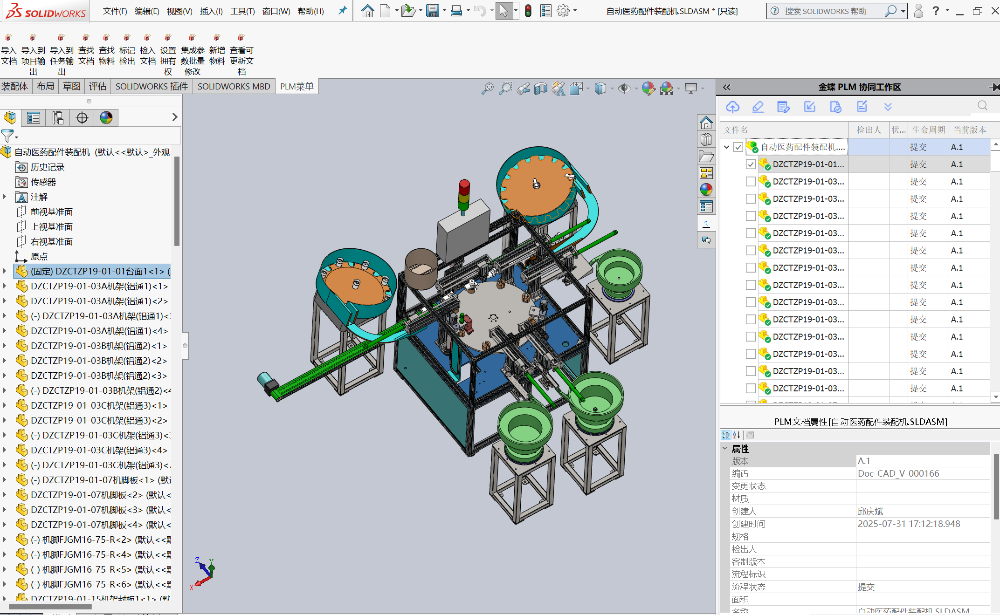
图 29 · CAD 协同设计方案（官网）。 金蝶主张三条链：多专业在同一 3D 装配树下协同；CAD 自动生成 EBOM；再转到 PBOM 并同步 ERP。手册截图证明的是后半段“从图纸抽出数据和结构”。
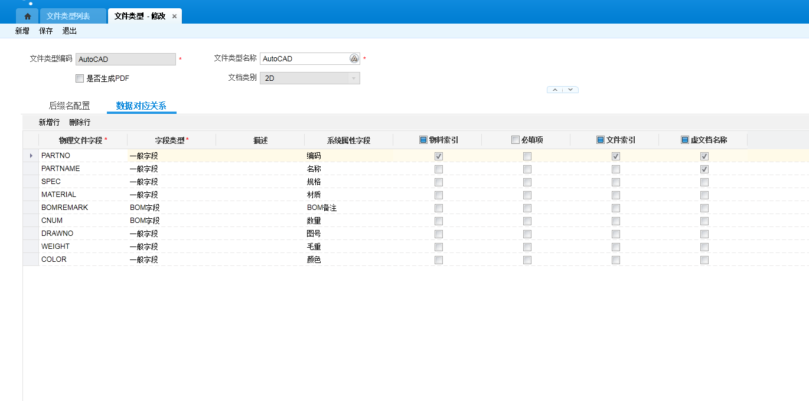
图 30 · CAD 字段映射。 图纸上的物理字段对应到系统的编码、名称、规格、材质、数量、图号等。导入时不是只上传文件，而是按这张对照表抽数据。
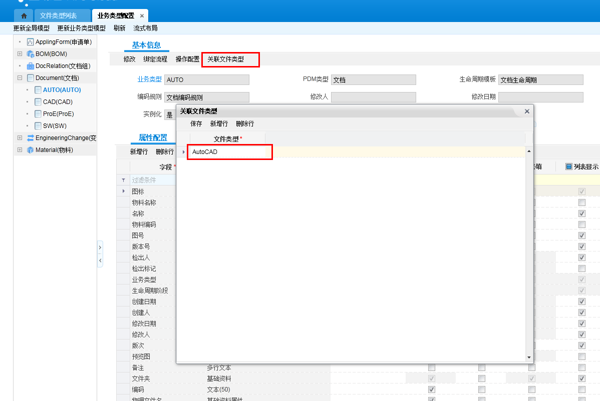
图 31 · 业务类型关联文件类型。 AUTO 这类文档业务类型必须先关联 AutoCAD，导入时系统才知道用哪套映射和生命周期。
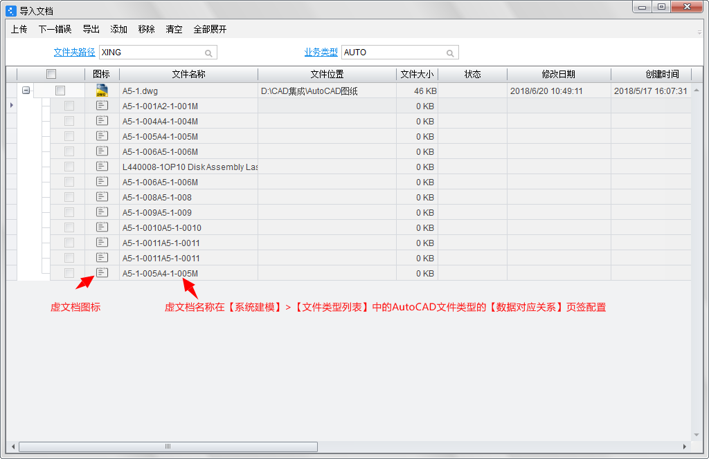
图 32 · 导入文档。 顶层是真实 DWG，下层 0KB 行是虚文档，来自明细栏。金蝶先保住结构，再决定哪些行生成物料。虚文档名称由文件类型的数据对应关系决定。
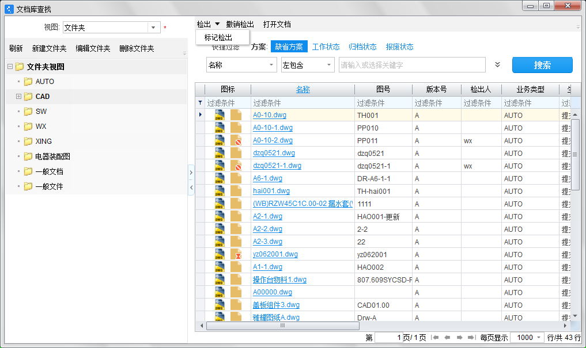
图 33 · 在 PLM 中查找 CAD 文档。 插件也可以打开文档库检索。检出、打开、撤销检出都在这里完成，工程师不必把文件拷到本地私盘。
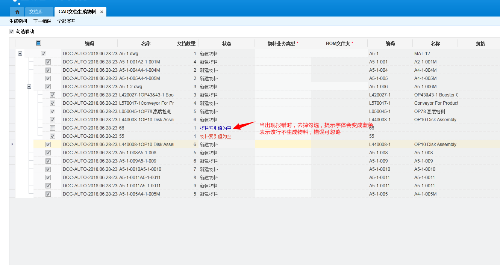
图 34 · CAD 文档生成物料。 勾选图纸后指定物料业务类型和 BOM 文件夹。状态会提示新建物料或报错。上层勾选可联动下层。生成成功后，图纸和物料变成强关联。
实现机制
插件负责读写 CAD；文件类型负责映射；文档组保存图纸结构；物料索引负责去重；生成物料动作同时写物料、BOM 和关系。之后的一致性靠检入规则和工程变更维持，而不是再靠人工同步。
功能 9
工程变更
这个功能是什么
设计改图纸或 BOM 之后，用申请、影响评估、变更任务、通知和下推，把研发、供应、制造拉到同一套新数据上，并留下审计链。
解决什么问题
改完设计却没有闭环时，采购还在买旧料，车间还在按旧结构做，关联图纸没升版。问题会变成批量错料、返工和责任不清。金蝶要回答四件事：为什么变、变什么、影响谁、变完下游有没有跟上。
如何解决
- 1
提出变更申请（ECR）：写来源、原因、负责人、变更内容，并添加变更对象（物料、BOM、文档等）。
- 2
系统按规则反查影响面：上层 BOM、关联图纸、工艺，以及 ERP 里的在途、在制、库存。人确认哪些必须一起变。
- 3
审批通过后下推变更单（ECO）。变更单把对象修改拆成可执行任务。
- 4
责任人在“我的变更任务”里检出对象、改结构或文件、升版、重新归档。
- 5
变更生效后通知相关部门（ECN），并把新物料 / BOM 下推到 ERP。未执行完不能关闭。
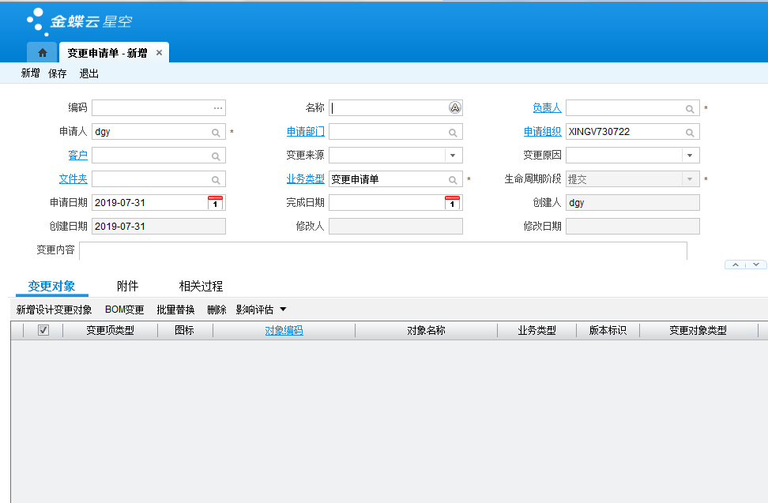
图 35 · 变更申请单。 上半是申请头：谁申请、为什么变、当前生命周期。下半是变更对象，并提供影响评估入口。这一屏解决“把变更意图结构化”，还没有改数据本身。
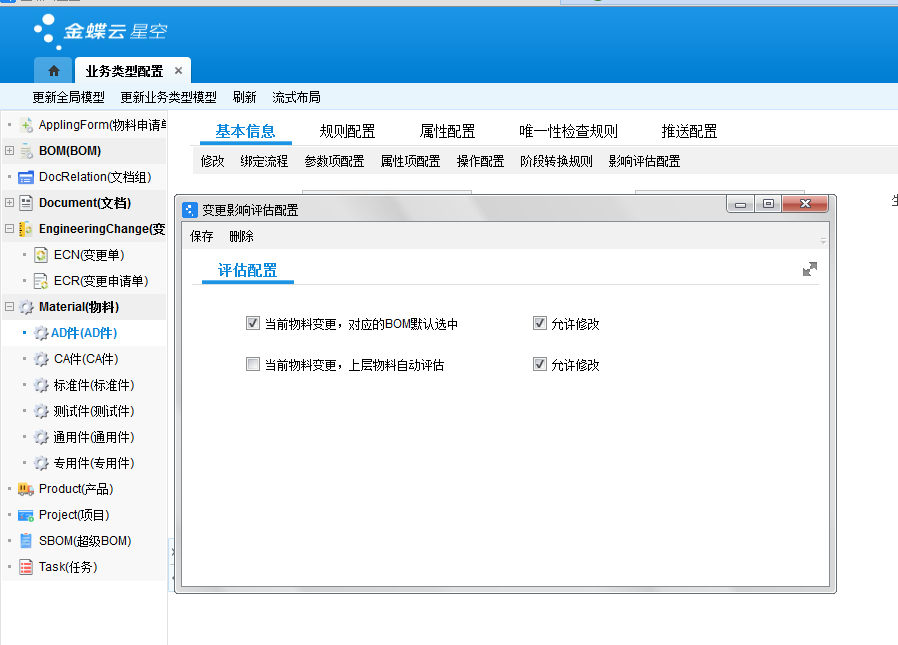
图 36 · 影响评估规则。 反查哪些关联对象默认勾选、哪些必须升版，由规则预置。评估不是每次从零问人，而是系统先给出影响清单，人再确认。
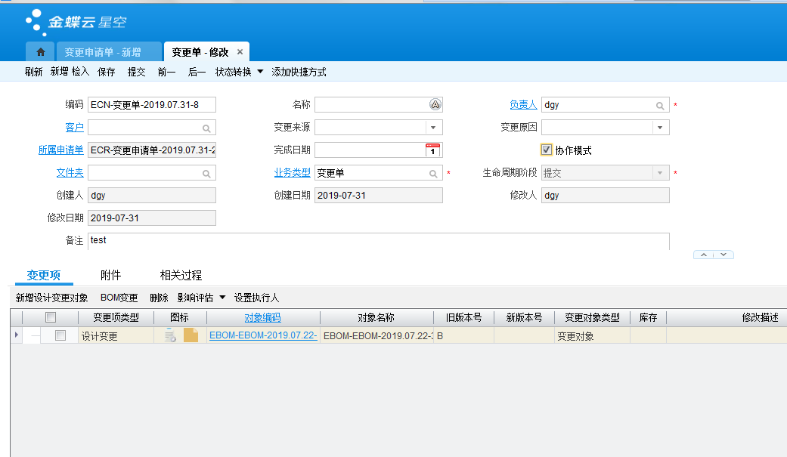
图 37 · 变更单。 批准后的执行对象。它把“同意变”转成“谁去改哪些对象，改完是什么结果”。
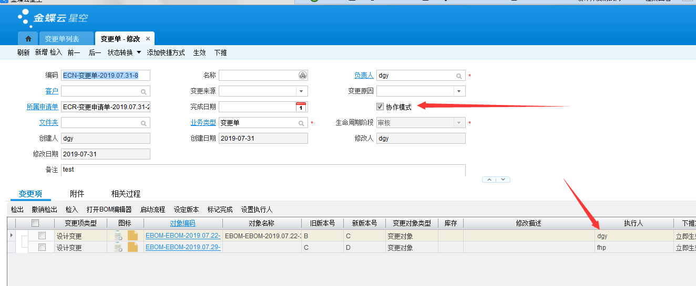
图 38 · 协助模式。 一个变更常跨机械、电子、工艺、采购。协助模式用来把任务分给不同角色，而不是一个人改完所有对象。
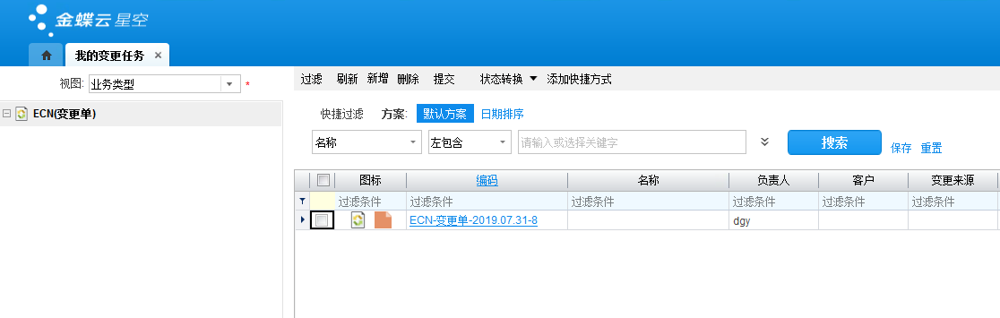
图 39 · 我的变更任务。 执行人的工作入口。变更不是再开一个项目，而是把对象修改送到个人待办。
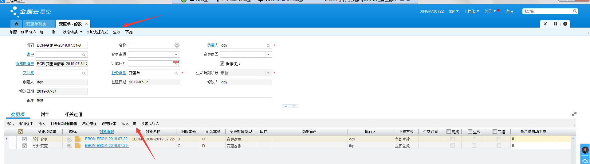
图 40 · 生效下推。 研发侧改完还不够，新数据要进入 ERP。金蝶把“变更关闭”定义成下游也拿到了新版本，而不只是 PLM 里状态变成完成。
实现机制
ECR 记录意图；关系网络和规则做影响分析；工作流做批准；ECO 生成任务；对象检入检出和升版落实数据；ECN 做通知；下推写下游系统。全程留审计。官网还强调影响面可覆盖 10 类以上 ERP 业务数据，这是它相对独立 PLM 的加分项。
功能 10
基线、配置与产品变型
这个功能是什么
基线冻结某一时刻的需求、计划、文档和 BOM 集合；配置 / 超级 BOM 用规则从同一产品族生成不同订单或不同型号的具体 BOM。
解决什么问题
没有基线，就无法回答“评审当时冻结的是哪一版”。没有配置规则，多型号只能靠复制整棵 BOM，改一处要改很多份。两者分别解决时间上的可比，和产品族上的可配。
如何解决
- 1
在关键评审或发布点创建基线数据包，把当时有效的对象版本打成一包。
- 2
之后变更或计划调整，用基线对比看差在哪。图 13 的项目基线就是这一能力在项目上的例子。
- 3
对产品族维护超级 BOM：配置字典、选项、规则。下单或生成新产品时，按选项抽出具体 EBOM。
- 4
隐藏或非必选模块可在生成成员时再决定是否带入，避免每个变型都复制整棵树。
实现机制
基线是对象集合快照。超级 BOM 是带可选性和规则的虚拟结构，生成动作把它实例化成普通物料和 EBOM。配置规则写在系统里，而不是只存在销售手册中。
功能 11
AI 与研发知识复用
这个功能是什么
在已有结构化对象上叠加检索、相似件推荐、需求解析、变更建议和知识问答，让工程师少做重复查找和重复设计。
解决什么问题
企业其实已经有很多历史零件和文档，但设计师找不到，只能再画一个几乎一样的件。变更时也不容易迅速判断库存和成本影响。AI 在这里的角色是降低检索和初判成本，不是替代审批。
如何解决
- 1
把物料、图纸、需求、变更、工艺先结构化。没有对象和版本，AI 只能生成无法溯源的文字。
- 2
在 CAD 里对当前模型做相似检索，按相似度、版本、生命周期、被引用次数列出可复用件。
- 3
设计师比较或直接打开已有零件，而不是继续把新模型设计完再入库。
- 4
官方还主张：需求提取、项目策划、工艺生成、变更影响结合 ERP 数据给出建议。这些需要实机验证是否写回对象，还是只停留在对话里。
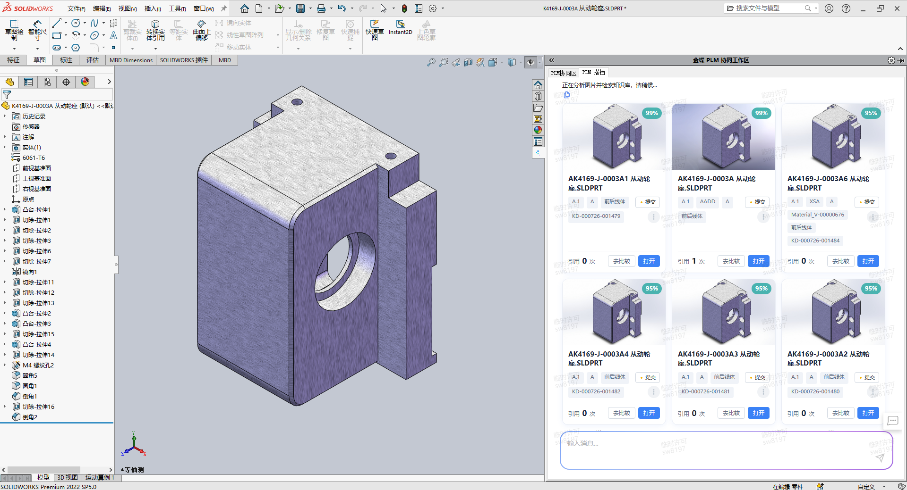
图 41 · SolidWorks 中的金蝶 PLM 协同区（官网）。 右侧正在“分析图片并检索知识库”，结果卡片带相似度、版本、生命周期和引用次数，可比较或打开。这是目前最具体的 AI 落地画面：在设计现场推荐已有件，而不是另开一个聊天网页。
实现机制
AI 依赖已索引的模型、属性和状态。推荐结果仍是 PLM 对象，打开和比较走原有 CAD 集成。真正有管理意义的前提是：推荐件有编码、版本和生命周期，可以被正式引用进 BOM。
除相似件检索外，需求自动拆分、智能工艺、变更成本建议在公开资料中缺少逐步操作证据，不能当成已验证能力。